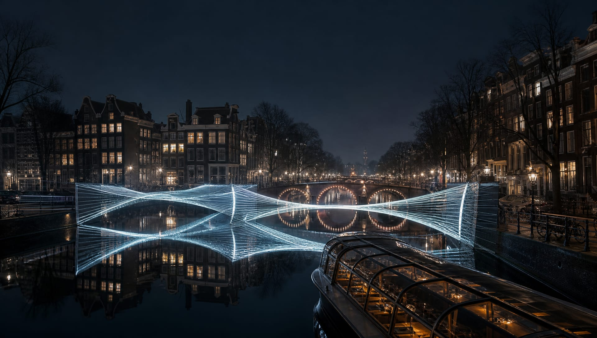
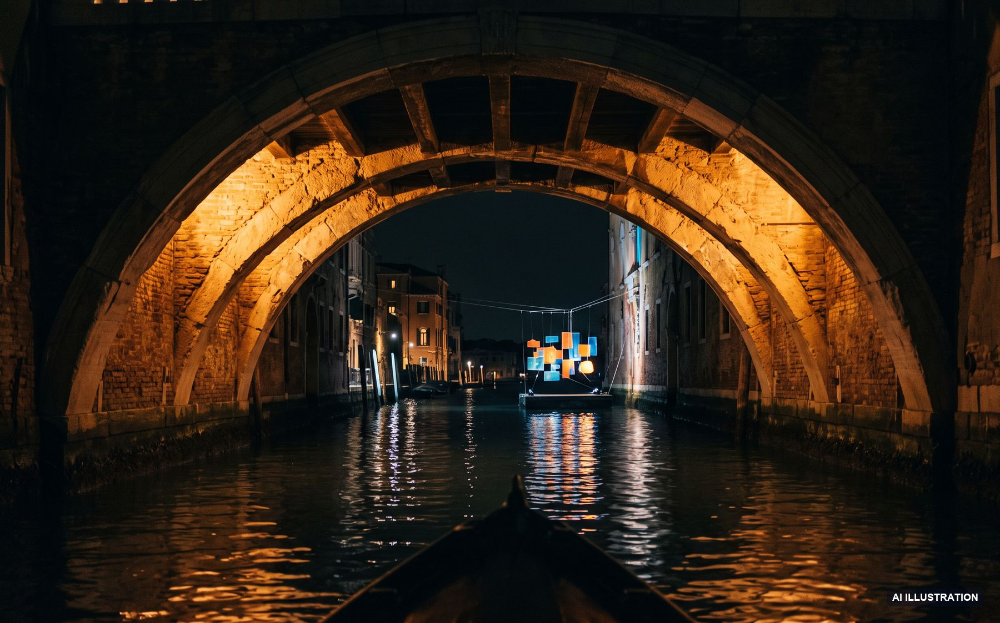
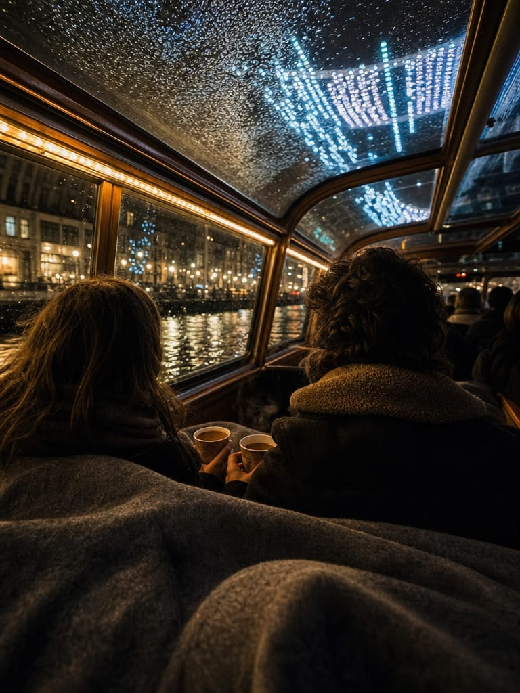

Stichting Amsterdam Light Festival — 15th edition
A winter of light on the water
31 artworks — 26 Nov 2026 to 17 Jan 2027 — nightly 17:00 to 23:00
The festival
For 53 nights, 31 light artworks by artists from 18 countries stand on the water, the bridges and the quays of the old centre. The 2026 edition follows the theme Reflections — work made to be doubled by the black surface of the canal, and to be read differently from the bank than from a boat.
Walking the route is free and always open. The way the artists intend it to be seen, though, is from the water — low, slow, and moving through the work instead of past it.
Sail the route31
Light artworks
6 km
Canal route
53
Nights
18
Countries
The route
Auto-scrolling · hover to pause

Ticketed — 75 or 95 minutes
Open sloop · glass-roof boat · historic salon boat
Practical
Blankets, hot drinks, step-free boarding and how to move your date — the answers people ask the ticket desk for most.

No. All 31 artworks stand in public space and the walking route is free, every night from 17:00 to 23:00. You only need a ticket to see the route from the water — that is the canal cruise.
Demo booking — no payment is taken at any step.
Contact
Visitor questions, group bookings over 20 people, school programmes and press accreditation — we answer within one working day.
Visitor info
hello@amsterdamlightfestival.testTicket desk — daily 10:00–20:00
+31 20 555 0126